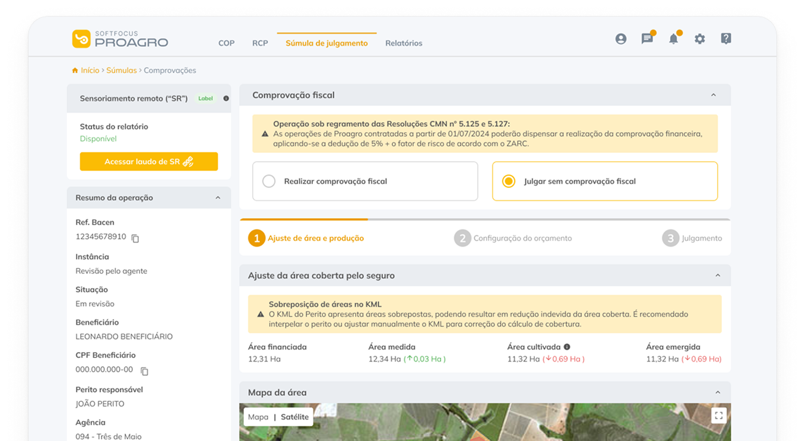
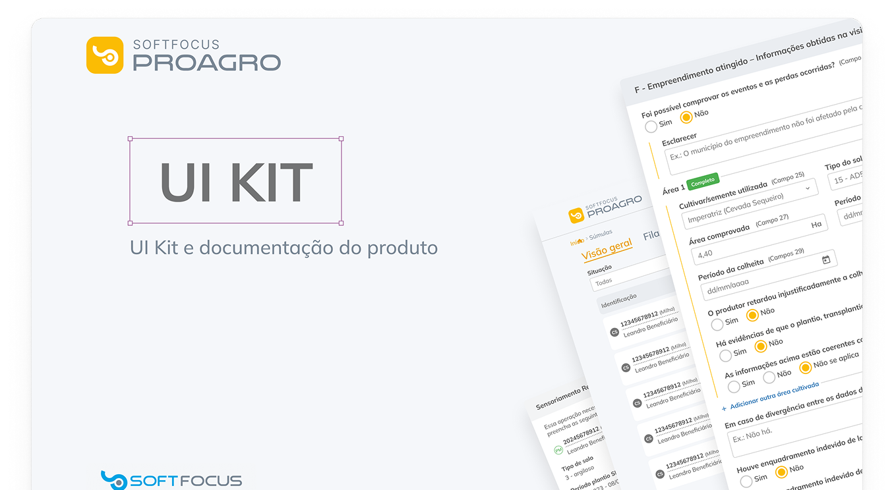
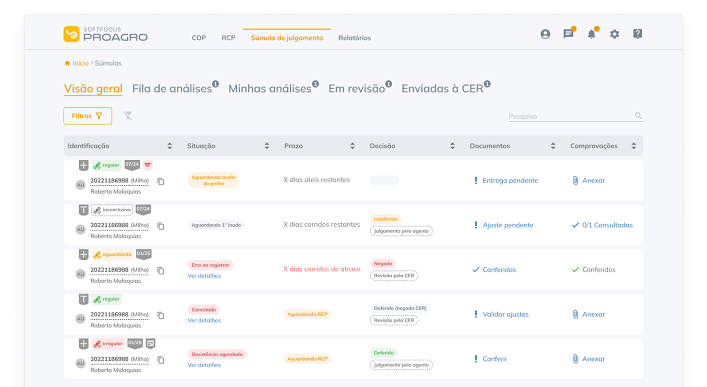
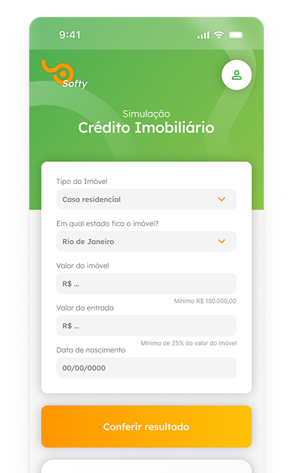
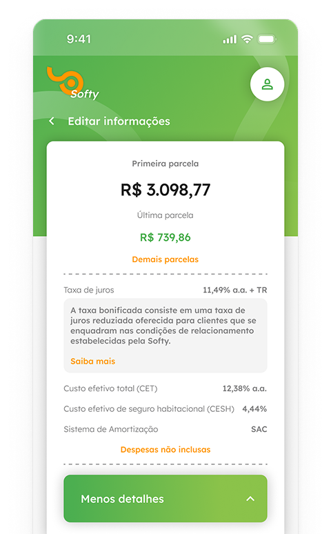

Making agricultural credit conveyor belt easier
As the responsible product designer of Softfocus’s main product (which serves more than 8 financial institutions and over 1,5k recurrent heavy and expert users), I proactively spearheaded the idea of enhancing the development process with both a new optimized handoff kit and a UI kit.

Role
UX/Product Designer
Duration
2.5 years
Team
1 Product Manager
1 QA, 5 Devs
Several stakeholders
Problem
The company had been through a couple of iterations within their UI. However, the latest version did not present an organized file with its components, making it really difficult to iterate or create new screens for the platform. Also, the handoff could use a little more attention, with room to improve on the old model that was adopted. Consequently, the design and development processes suffered critically from this lack of organization and celerity.
Solution
Creation and management of the product's UI Kit, rebuilding from the ground up all the components that were scattered around using design system's and Figma's best practices in order to achieve scalability and easier file management.
Pitched and conceived the idea of streamlining the handoff process by better utilizing Figma and creating a handoff kit in order to bridge the gap between design and development.
Components were with Figma’s best practices available at the time (auto layout, content swap properties, variables, local styles) and the UI Kit proved to be an excellent endeavor, accelerating the creative freedom, iteration velocity, and development process. With both new dynamics within the product's development belt, we saw an increase in efficiency with handoffs, lowering bugs and reworks related to the frontend and frontend engineering time was reduced.
35%
Efficiency with handoffs lowering bugs and reworks related to the frontend
20%
Frontend engineering time
+50
Components conceived



